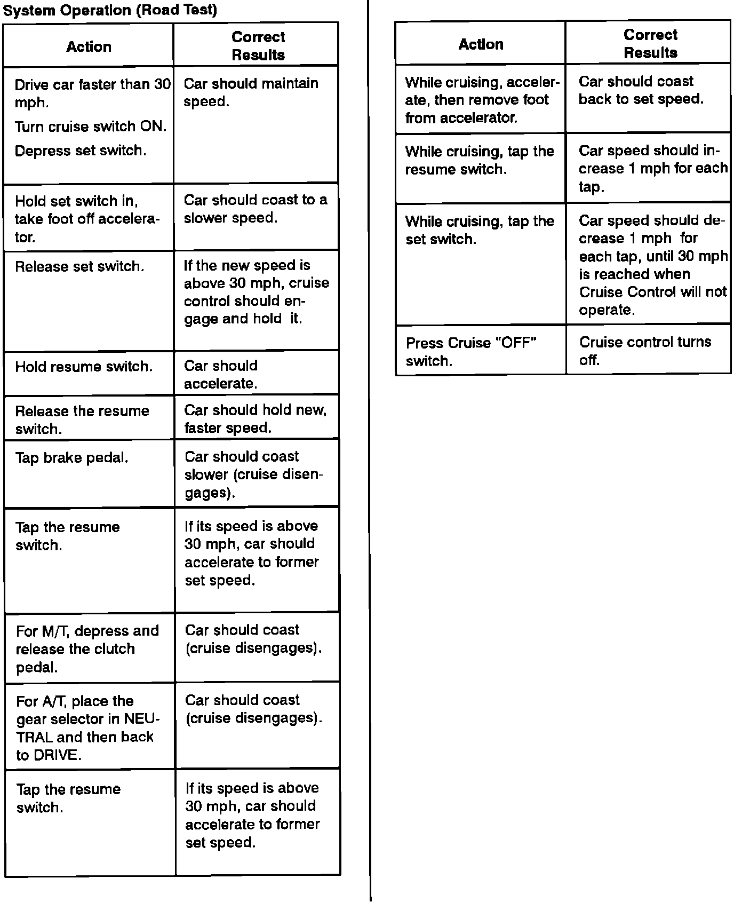

Operation CHARM
: Car repair manuals for everyone.
Home
>>
Acura
>>
1993
>>
Integra L4-1834cc 1.8L DOHC FI
>>
Repair and Diagnosis
>>
Cruise Control
>>
Testing and Inspection
>>
Initial Inspection and Diagnostic Overview
Initial Inspection and Diagnostic Overview
Cruise Control Circuit Operation:
